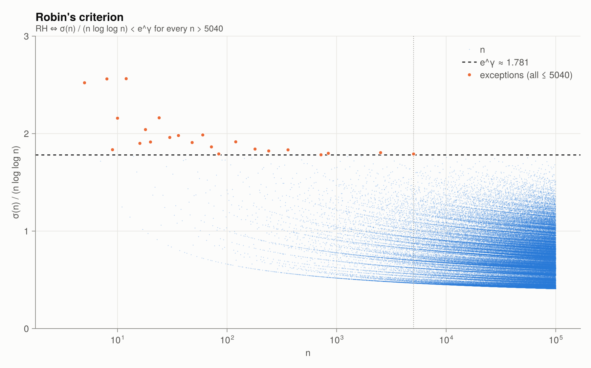
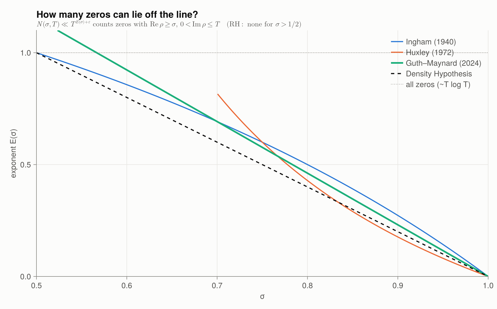

8 · Equivalent criteria & bounds
RH has hundreds of equivalent formulations. Several of them are elementary statements about integers, and Riemannian can test those numerically. Of course, no finite computation can prove them.
von Koch (1901)
\[\text{RH} \iff \pi(x) = \operatorname{li}(x) + O\!\left(\sqrt x \log x\right).\]
See the error panel in Chapter 1.
Mertens function
\[\text{RH} \iff M(x) = O\!\left(x^{1/2+\varepsilon}\right) \text{ for every } \varepsilon > 0.\]
mertens_ratio_max(10^6)(x = 5, ratio = 0.8944271909999159)Robin's criterion (1984)
\[\text{RH} \iff \sigma(n) < e^{\gamma}\, n \log\log n \quad \text{for all } n > 5040.\]
Unconditionally, the inequality fails for exactly 26 values $3 \le n \le 5040$ (27 if you also count $n = 2$, where $\log\log 2 < 0$):
robin_violations(10^5)26-element Vector{Int64}:
3
4
5
6
8
9
10
12
16
18
⋮
84
120
180
240
360
720
840
2520
5040plot_robin()
Akbary and Friggstad showed that if Robin's inequality fails at all, it fails at a superabundant number. Computations by Briggs and by Morrill–Platt rule out every candidate up to an astronomically large bound.
Lagarias' criterion (2002)
With $H_n = 1 + \frac12 + \dots + \frac1n$,
\[\text{RH} \iff \sigma(n) \le H_n + e^{H_n}\log H_n \quad \text{for all } n \ge 1.\]
This version needs no exceptions and no limits:
lagarias_violations(10^4)Int64[]Li's criterion (1997)
Define the Keiper–Li coefficients
\[\lambda_n = \sum_\rho \left[1 - \left(1 - \frac1\rho\right)^n\right].\]
Then RH $\iff \lambda_n > 0$ for all $n \ge 1$. The first one is known in closed form, $\lambda_1 = 1 + \frac\gamma2 - \frac12\log 4\pi \approx 0.0230957$. The truncated sum creeps up towards it:
[(k, li_coefficient(1, nontrivial_zeros(k))) for k in (10, 100, 1000, 5000)]4-element Vector{Tuple{Int64, Float64}}:
(10, 0.013535199544232324)
(100, 0.01998485240392367)
(1000, 0.02237613085378265)
(5000, 0.02286887355107403)LI_LAMBDA10.02309570896612101Zero-density estimates
RH says that $N(\sigma, T) = \#\{\rho : \beta \ge \sigma, 0 < \gamma \le T\}$ vanishes for every $\sigma > \frac12$. Unconditionally we have bounds of the form
\[N(\sigma, T) \ll T^{A(\sigma)(1-\sigma) + \varepsilon}.\]
| result | exponent $A(\sigma)(1-\sigma)$ |
|---|---|
| Ingham (1940) | $\frac{3(1-\sigma)}{2-\sigma}$ |
| Huxley (1972) | $\frac{3(1-\sigma)}{3\sigma - 1}$ |
| Guth–Maynard (2024) | $\frac{30}{13}(1-\sigma)$ |
| Density Hypothesis (conjecture) | $2(1-\sigma)$ |
The Guth–Maynard bound was the first substantial improvement in the critical range near $\sigma = \frac34$ since Ingham. Its consequences include the prime number theorem in short intervals $[x, x + x^{17/30 + \varepsilon}]$, improving Huxley's exponent $7/12$.
zero_density_exponents(0.75)(trivial = 1.0, ingham = 0.6, huxley = 0.6, guth_maynard = 0.5769230769230769, density_hyp = 0.5)plot_zero_density()
Proportion of zeros on the line
Write $\kappa$ for the proportion of nontrivial zeros on the line that have been proved.
| $\kappa >$ | |
|---|---|
| Hardy (1914) | infinitely many |
| Selberg (1942) | a positive proportion |
| Levinson (1974) | $1/3$ |
| Conrey (1989) | $2/5$ |
| Bui–Conrey–Young (2011) | $0.4105$ |
| Pratt–Robles–Zaharescu–Zeindler (2020) | $5/12 \approx 0.4167$ |
Functions in this chapter
robin_ratio, robin_violations, lagarias_holds, lagarias_violations, li_coefficient, LI_LAMBDA1, mertens_ratio_max, zero_density_exponents.